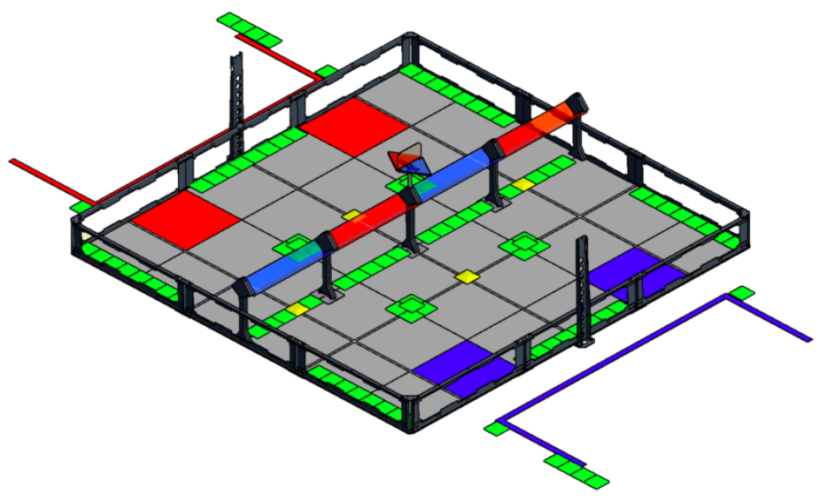
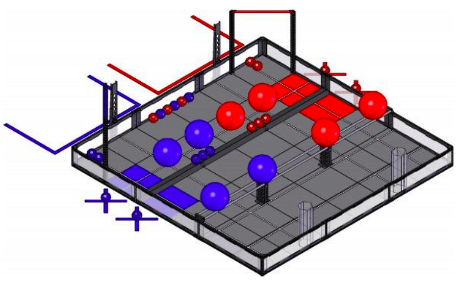
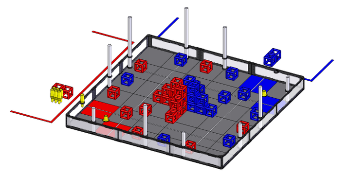

The following information is quoted from the VEX Robotics Wiki
Vex Robotics
VEX is a championship for robotics that varies from all ages and grades up to the college level. The Championship is broken down into several leagues for each school level. VEX IQ for elementary school students, VEX EDR for middle, high school and college, and VEX PRO for FRC teams. For high school, VEX EDR is the championship to play in.
VEX rolls out each year with a new game to play with special rules and challenges that teams need to build around in order to gain points. The focus of VEX is to inspire students to learn more about robotics by creating a safe and stable environment to practice their skills. VEX also provides a challenging problem to each game that allows students to develop problem solving skills. Moreover, VEX is a group activity and requires a team of students. This allows students to get the feel for working in a group.
VEX itself is a Robotics Design System that provides itself as an easy to learn format for students. VEX is also very deep into the robotics industry with partners like Autodesk and HEXBUG. Students are required to know and learn more about technology, math, science, and engineering to fully understand VEX. The VEX system is very popular amongst classrooms and robotics hobbyists, which means it’s well developed and trusted by many. Together with the VEX System and the Championship, students around the world are learning more about robotics together. Each competition allows for teams to learn from each other, and create more ideas. This new wave of problem solving and group work can help create a more educated society about robotics and with an active interest in engineering and math.
Previous VRC Games
VEX Sack Attack 2012-2013
VEX Sack Attack was revealed in 2012 at the VEX World Championships. This game features two alliances, made up of two teams, that compete to collect the most amount of sacks. The field is a flat, square foam field with the goals running through the middle. The goals come on three heights, as that was the challenge to this game. A low goal, or parking space was the easiest goal, and the middle trough was the goal that many players were expected to go for.
The high goal were two small triangles that fit up to three sacks and allowed alliances to gain a large sum of points. Points were also allotted for teams who scored sacks during the autonomous period and could receive a parking bonus at the end of the driver-controlled section. Teams were also allowed sacks that they could place into the robot by hand at certain times during the match. With 15 seconds of autonomous control and 105 seconds of driver control, Sack Attack was a fast-paced game that required teams to create a plan of attack from the R+D stage to the testing stage.
VEX Toss Up 2013-2014

VEX Toss Up was revealed at the VEX 2013 World Championships. This new game was unique in the way it split the flat field into three sections. There were many game objects that the team could play with, therefore many unique robot designs were created for this game. Overall, the two alliances were made up of two teams each. Each team had 15 seconds of autonomous control and 105 seconds of driver control. Game objects included small buckyballs, large balls, a tube for small buckyballs to enter into and large balls could sit on top of, a barrier, a 2-inch bump, and a hanging bar. Teams had multiple ways of scoring, whether they chose to place balls into the goal zone, hang with a ball, or score into the tube.
VEX Skyrise 2014-2015

Revealed at the 2014 VEX World Championships, Skyrise surprised many teams with its element of height. The field consists of 44 cubes, two tower bases, and 10 goal towers. The aim is to place as many cubes onto the towers. The higher the tower, the more points the alliance can gain. Included are 14 skyrise sections that can be place on the tower base to create a customized height, each built sections gives 4 points and each cube scored onto the skyrise tower gains 4 more points. Teams are allowed 15 seconds of autonomous control and 105 seconds of driver control and at the end of the autonomous period the team with the most points gets 10 extra points. The added challenge to this game, apart from the height, is to own the post meaning that the alliance with the last cube on the post gains points for each cube on their respective color on that post, whereas the other alliance does not get any points from that post. This method of stealing makes winning even harder, teams are expected to master the height challenge and stay stable throughout the game.